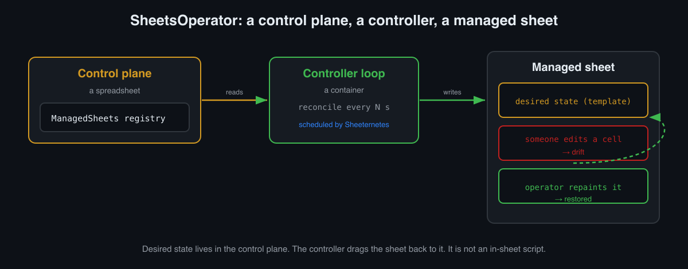

A quick bit of context for the meme this is built on. In Russia, every September 3rd the internet flips its calendar to a Mikhail Shufutinsky song, «Третье сентября» (“The Third of September”), whose chorus goes “I’ll flip the calendar.” It has become a nationwide, unkillable meme. So this year, instead of fighting it, I made it permanent in engineering: a public Google Sheet that can only ever be September 3rd.
Anyone on the internet can open it and edit it. Erase the face, recolor the cells, change the banner. A few seconds later it all snaps back. You cannot win. You will flip the calendar, and it will flip right back.
Under the joke is something I had wanted to build properly for a while: a canonical operator. Not a script inside the sheet, but an external controller that drags reality toward a desired state, exactly like an operator in Kubernetes. In the first article I wrote about Sheeternetes, an orchestrator whose control plane lives in a spreadsheet. This is the next logical step: the operator pattern applied to spreadsheets themselves.
First, a thank-you
The idea to build an actual operator for sheets (rather than yet another script) was not mine. Artem Goryachev suggested looking at sheet management through the operator pattern and adding federation. Thank you, Artem. It grew into a thing I am now unreasonably happy with. Here is what came out of it.
What “a self-healing sheet” means, and why it is an operator and not a script
The distinction is subtle but it is the whole point.
The naive version: attach an Apps Script onEdit trigger
to the sheet that reverts changes. But that is not an
operator. It is a defense from inside the managed resource,
like a Kubernetes pod trying to heal itself. It breaks together with the
resource, lives within its boundaries, and does not scale across many
sheets.
A real operator is built differently. Three parts:
- Control plane — a separate registry sheet
(
ManagedSheets) that holds desired state: which sheets we manage and by which template. - Controller — an external process (a container, in our case) running a reconcile loop: read the registry, drag every managed sheet back to its template.
- Managed sheet — the resource that people edit and the controller repaints.
Desired state lives outside the managed resource, and the controller pulls the resource toward it. That is the definition of an operator, word for word. You can delete the managed sheet entirely, recolor it, wipe it, the controller does not care, it redraws it from the template. That is why this is “self-healing,” not “edit rollback.”

The whole reconcile is a single idempotent function: take the template, repaint the banners and the pixel image (via cell backgrounds) onto the sheet, and do it again every cycle. Repainting over the top is the drift correction. There is no need to figure out what changed, it is enough to bring it back to the reference.
The demo: a sheet that is always September 3rd
The managed sheet is public, anyone can edit it. Its desired state is:
- a gold banner, «И СНОВА ТРЕТЬЕ СЕНТЯБРЯ» (“And once again, the Third of September”);
- a red banner, «🔥 ГОРЯТ КОСТРЫ РЯБИН 🔥» (“the rowan bonfires are burning,” a line from the song);
- a pixel portrait of Shufutinsky drawn entirely in cell backgrounds (a real Wikimedia photo, downsampled to a grid);
- a strip at the bottom where bonfires and rowan berry clusters are drawn out of cells.
The portrait is not a cartoon, it is a downsample of a real photograph (taken, fittingly, on 2021-09-03). The grid is 138×192 cells, each cell 6 pixels, so three times the detail fits into the same overall footprint: you can make out the bald head, the blue sunglasses, the goatee, the pendant.
Now the best part. Here is the self-heal live: I opened the sheet, broke the banner and punched a white hole through the face, and the operator put it all back within seconds.
This is not staged. I really defaced it through the API (changed the banner text to “EVERYTHING IS BROKEN” and filled the center of the face with white), and then the controller repainted the sheet from the template on its next pass. The banner came back, the face reassembled, the hole vanished. Public to read, it lives in the cloud and heals itself as long as a controller is running somewhere.
Touch it live (only while a controller is running):
- Managed sheet (public, go break it):
docs.google.com/spreadsheets/d/1AEF9J07u4GV66Hs5zURpWQwN9tFuFwNr3-rVdeoaCMQ - Control plane (registry, read-only):
docs.google.com/spreadsheets/d/1ihtshuJoTZ0muxKUjiCe_3HYlaAGpODDNb60-Mu3AmU
Run your own, in one command
This is a template for sheets-operator.
You need Docker, git, and a Google OAuth “authorized-user”
JSON (with the spreadsheets and drive scopes).
It contains a refresh_token, so the controller refreshes
its own access and keeps working indefinitely. Keep the creds file
private and never commit it.
git clone https://github.com/sncfoundation/sheets-operator && cd sheets-operator
git clone https://github.com/sncfoundation/demos # templates (incl. sep3) live here
cp /path/to/google-oauth-authorized-user.json creds.json # your creds; never commit
# create your own self-healing "September 3rd" sheet from the template, one command:
SHEETSOP_TEMPLATES=demos/sep3 SHEETSOP_CREDS=creds.json \
python3 sheetsctl.py apply my-sep3 --template sep3apply creates a new sheet, makes it public, registers it
in the control plane, and reconciles it once. Then you want a controller
to heal it continuously:
docker build -t sheets-operator:1 .
docker run -d --restart unless-stopped \
-e SHEETSOP_CONTROL=<your-control-plane-id> -e SHEETSOP_TEMPLATES=/templates -e PYTHONUNBUFFERED=1 \
-v $PWD/creds.json:/creds/creds.json:ro \
-v $PWD/demos/sep3:/templates:ro \
sheets-operator:1 run --interval 10And verify:
docker ps # sheets-operator should be Up
docker logs -f sheets-operator # expect: reconciled my-sep3 (sep3)Now open your sheet, break something, and within a few seconds it reassembles.
Two easy traps:
- Use
run, notapply.runheals existing sheets.applycreates new ones (loop it and you will litter your Drive with sheets). - Moving to another host does not change any sheet
links. The controller drives sheets by their ids in the control
plane. Point a new host at the same
SHEETSOP_CONTROLwith the same creds and it drives the same sheets, with identical URLs. A laptop is fine for a demo, but while it sleeps the controller is paused and edits are not repaired. For “always on” you want a small VM.
An operator as a container scheduled by… a spreadsheet
Here is the nesting doll the whole thing was built for. The controller is just a container. So its canonical home is a Sheeternetes Deployment. Which means:
- the operator’s image can be stored in a sheet (the same SICF from the DOOM article);
- a spreadsheet cluster schedules it;
- a kubelet runs it on a node.
You end up with an operator scheduled by a spreadsheet that manages spreadsheets. The Deployment looks ordinary, just with a secret for the creds and an env var pointing at the control plane:
{ "name": "sheets-operator", "image": "sheets-operator:sep3", "replicas": 1,
"cpu_req": 100, "mem_req": 128,
"env": "SHEETSOP_CONTROL=<control-plane-id>",
"secret_files": "gcreds:/creds/creds.json" }The creds arrive as a Secret that the kubelet mounts into the container at runtime. They are never baked into the image and never end up in git. Execution, as always, stays on the node. The sheet is the control plane, never the executor.
And the final layer of absurdity: there is a third, cluster sheet where the whole Sheeternetes structure (Deployments/Nodes/Pods/Events/Images) lives as tabs, plus a Sheetfana dashboard. Open it read-only and you can watch the operator running as a pod, with its own image living in cells right next to it. A spreadsheet scheduling the operator that heals a spreadsheet. The recursion is left as an exercise for the reader.
A few findings
- Smaller cells, more detail. At first, “3x detail”
made the portrait three times bigger physically. The right move is a
smaller cell (6 px instead of 16): same overall size, three times
sharper. Cell size is a template field (
cell_px), so it tunes without touching code. - Concurrent editing does not get in the way. Google Sheets uses operational transformation under the hood, so even when several people vandalize the sheet at once, the controller calmly brings it back to the reference on its next pass. No races: reconcile is idempotent.
- One controller per control plane. Two will not break anything (reconcile is idempotent) but there is no point. Two controllers with different templates, though, will play tug-of-war, which is why the image and templates must stay on the same version.
What this actually is, seriously
It is a joke about a Russian singer, sure. But it is also a working, compact example of what an operator is and how reconcile differs from “rolling back edits”:
- desired state lives outside the resource, in the control plane;
- the controller continuously drags the resource toward it, rather than reacting to specific events;
- the repaint is idempotent, so there is no need to compute a diff, just bring it to the reference;
- you can destroy the resource entirely and it comes back, because the source of truth is not inside it.
That is exactly how real operators work in Kubernetes. It is just that here the managed resource is a public Google Sheet with a singer’s face, and anyone can verify the self-healing with their own hands.
How we put images (including the operator’s own image) into cells and boot a whole DOOM out of them is in the companion article.
Join in
All open source and alive. The community is international and English-speaking.
- 📗 SheetsOperator: github.com/sncfoundation/sheets-operator
- 🎪 Demos (including “September 3rd”): github.com/sncfoundation/demos
- 💬 Slack sheetncf, Telegram t.me/stncf, LinkedIn company/sheetncf
- 🌐 All the code: github.com/sncfoundation
I’ll flip the calendar. It reconciles.